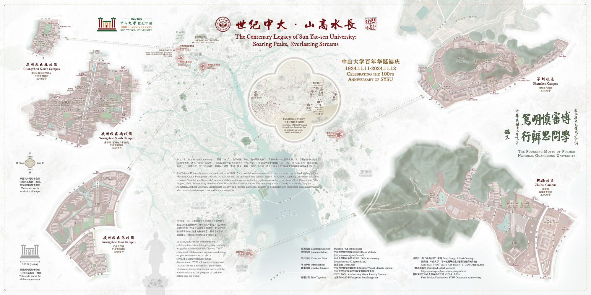

Sun Yat-sen University
Centenary Memorial Map
銆婁笘绾腑澶?路 灞遍珮姘撮暱銆?
涓北澶у鐧惧勾鍗庤癁绾康鍦板浘
The Centenary Legacy of Sun Yat-sen University:
Soaring Peaks, Everlasting Streams
Runner-Up of Reference Map Award in WLIA 2025 Map Contest
濞佹柉搴锋槦宸炲湡鍦颁俊鎭崗浼?2025骞村湴鍥炬瘮璧涘弬鑰冨湴鍥剧被绗簩鍚?
 Download Compressed Image
涓嬭浇鍘嬬缉鍥剧墖
Download Full-Size Image
涓嬭浇楂樻竻鍥剧墖
This bilingual commemorative map celebrates the 100th anniversary of Sun Yat-sen University, not only
showcasing its geographical layout but also weaving in rich historical and
cultural elements. It reflects the university鈥檚 remarkable century-long journey of growth and
achievement.
杩欏箙涓北澶у鐧惧勾鏍″簡绾康鍦板浘鍦ㄥ睍绀哄悇涓牎鍖哄湴鐞嗗垎甯冪殑鍚屾椂锛岃瀺鍏ヤ簡涓板瘜鐨勫巻鍙叉枃鍖栧厓绱狅紝鍙嶆槧浜嗗鏍″巻缁忕櫨骞寸殑鍙戝睍鍘嗙▼鍜岀灘鐩垚灏便€?
The map illustrates the five campuses spanning three cities in Guangdong Province: Guangzhou (South,
North, and East Campuses), Zhuhai, and Shenzhen. Key features such as campus
gates, main streets, landmarks, and major bodies of water are clearly labeled.
鍦板浘灞曠ず浜嗕腑灞卞ぇ瀛﹀湪骞夸笢鐪佺殑浜斾釜鏍″尯锛屽垎鍒垎甯冨湪骞垮窞锛堝崡銆佸寳銆佷笢鏍″尯锛夈€佺彔娴峰拰娣卞湷涓夊骇鍩庡競銆傚悇鏍℃牎鍖虹殑鏍￠棬銆佷富瑕佽閬撱€佸湴鏍囥€佹按鍩熺瓑涓昏鍦扮墿杩涜浜嗘竻鏅版爣缁樸€?
An inset map, positioned slightly above the center, provides a brief account of the university鈥檚
relocation during the Second Sino-Japanese War, highlighting its resilience and
commitment to education during turbulent times.
浣嶄簬鍦板浘涓儴鍋忎笂鏂圭殑涓€寮犳彃鍥剧畝瑕佷粙缁嶄簡涓北澶у鍦ㄦ姉鏃ユ垬浜夋湡闂寸殑鎼縼锛屽睍鐜颁簡瀛︽牎鍦ㄥ姩鑽℃椂鏈熺殑瀵规暀鑲蹭簨涓氱殑鍧氶煣銆?
Designed in an elegant ink-wash style, the map integrates Sun Yat-sen University鈥檚 signature colors鈥攄ark
red and deep green鈥攂lending geographical accuracy with the refined aesthetics
of traditional Chinese art. The base map was created in Mapbox using data from OpenStreetMap.
Additionally, motifs from the university鈥檚 emblem, such as the begonia-shaped window
design, are subtly incorporated into key elements, including the compass rose, inset map frame, and
point symbols.
鍦板浘閲囩敤浼橀泤鐨勬按澧ㄩ鏍艰璁★紝铻嶅悎浜嗕腑灞卞ぇ瀛︾殑鏍囧織鎬ч鑹测€斺€旀殫绾㈣壊鍜屾繁缁胯壊锛屽皢鍦扮悊绌洪棿鍑嗙‘鎬т笌涓浗浼犵粺鑹烘湳缇庡铻嶄负涓€浣撱€傚熀纭€搴曞浘鏄湪Mapbox涓娇鐢?
OpenStreetMap鐨勫紑婧愭暟鎹垱寤恒€傛澶栵紝瀛︽牎鐨勬牎寰藉浘妗堬紙渚嬪绉嬫捣妫犲舰绐楁埛璁捐锛夊阀濡欏湴铻嶅叆浜嗗叧閿厓绱犱腑锛屽寘鎷寚鍖楅拡銆佹彃鍥炬鏋跺拰鐐圭姸绗﹀彿绛夈€?
As a 2015 GIS graduate of Sun Yat-sen University, I present this map as a heartfelt tribute to my alma
mater鈥檚 centennial celebration. To further enhance its significance, I have
also carved a seal featuring the phrase "Soaring Peaks, Everlasting Streams"鈥攁 symbol of the
university鈥檚 enduring spirit鈥攕erving as the finishing touch to this commemorative piece.
浣滀负涓北澶у 2015
灞婂湴鐞嗕俊鎭郴缁熶笓涓氱殑姣曚笟鐢燂紝鎴戝湪姣嶆牎鐧惧勾鏍″簡涔嬮檯绮惧績鍒朵綔浜嗚繖寮犲湴鍥俱€備负浜嗚繘涓€姝ュ畬鍠勮瑙夋晥鏋滐紝鎴戣繕鍒讳簡涓€鏂瑰嵃绔犱綔涓虹偣缂€锛屼笂闈㈠埢鏈夆€滃北楂樻按闀库€濃€斺€旇繖鏄腑灞卞ぇ瀛︽牎鍙嬩箣姝岀殑鍚嶅瓧锛屼篃鏄噸瑕佺殑绮剧璞″緛銆?
Below is the graphic of the carved seal 灞遍珮姘撮暱 (Soaring Peaks, Everlasting Streams) embedded into the map:
涓嬪浘涓哄湴鍥句腑宓屽叆鐨勨€滃北楂樻按闀库€濈瘑鍒诲嵃鈥嬧€嬬珷鍥炬锛?


Below is a video (YouTube, Bilibili) of the SYSU alumni song (灞遍珮姘撮暱), in which I played the low/high
whistles and cajon box drum.
浠ヤ笅瑙嗛涓哄摠绗涚増鐨勪腑灞卞ぇ瀛︽牎鍙嬩箣姝岋紙鍗崇浜屾牎姝岋級銆婂北楂樻按闀裤€嬨€傛垜灏嗚嚜宸辨紨濂忕殑浣庨煶涓庨珮闊冲摠绗涗笌绠遍紦澹伴亾涓庡師闊抽銆佽棰戣繘琛屼簡娣峰悎銆?
Click
to know more about the 100th anniversary of SYSU (English Version).
鐐瑰嚮浜嗚В鏇村鍏充簬涓北澶у鐧惧勾鏍″簡鐨勪俊鎭€?
In Feb 2025, this map won the 2nd Place of Base & Reference Map Award during Wisconsin Land Information
Association (WLIA) 2025 Annual Conference Map Contest.
鍦?025骞?鏈堢殑濞佹柉搴锋槦鍦熷湴淇℃伅鍗忎細骞翠細涓紝鏈湴鍥捐崳鑾峰ぇ浼氬湴鍥炬瘮璧涘弬鑰冨湴鍥剧被绗簩鍚嶃€?

If you have any suggestions towards this map(s), please share your feedback below. My
latest works and updates will be posted on the main social
media platforms. Thank you so much for your
support!
鑻ユ偍瀵规湰鍦板浘鐨勮璁℃垨鍐呭鏈変换浣曞缓璁紝娆㈣繋鍦ㄤ笅鏂圭暀瑷€鍖猴紙濮撳悕銆侀偖绠便€佸唴瀹癸級鎻愪氦鍙嶉锛屾湡寰呬笌鎮ㄨ繘涓€姝ヤ氦娴併€傛渶鏂颁綔鍝佷笌鍔ㄦ€佷細鍦ㄤ富瑕?a href="../connect.html"
target="_blank">绀句氦濯掍綋骞冲彴涓婃洿鏂帮紝闈炲父鎰熻阿鎮ㄧ殑鍏虫敞涓庢敮鎸侊紒
This map was displayed in the map gallery (map poster) of North American Cartographic Information Society (NACIS) 2025 annual meeting at Louisiville, KY (Oct 15-17). Check out my other entries in the map gallery!